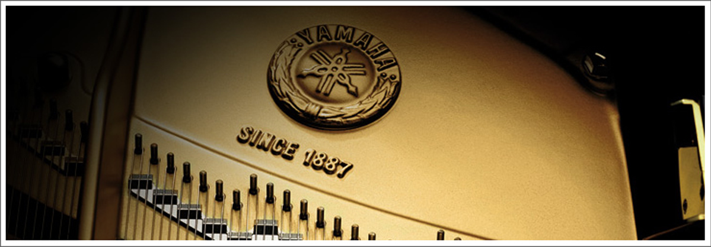

雅码哈集团
雅码哈集团

雅马哈的历史是从一台坏掉的风琴开始的。
那是在1887年，被日本滨松寻常小学视为宝贝的美国产风琴突然不响了，受到修理委托的是当时身为医疗器械修理工的山叶寅楠。次看到风琴内部构造的寅楠对这种乐器产生了兴趣，并萌发了自己亲手制造一台风琴的念头。
于是，他以修理中所观察到的构造为基础，与装潢工匠河合喜三郎一起制造出了一个又一个的零件。经过63天的反复试验，
日本台国产风琴终于诞生了。为了让完成的风琴接受审查，两人用扁担扛着风琴徒步翻越过箱根岭，千里迢迢来到了东京的音乐调查所
(现东京艺大)。但是，面对“风琴外形虽好，但调律不准，难以使用”这样残酷的评价，两人很失望。“不能因为这点挫折前功尽弃，让初的志愿彻底实
现吧！”这样，寅楠留在了东京，以特别旁听生的身份在音乐调查所从零开始学习音乐理论和调律方法。1个月的突击学习之后，寅楠回到了
滨松，开始日以继夜地专心致力于风琴的制作，终于完成了第二号风琴。第二次的审查得到了“可以替代进口风琴”的认定。
1889年，寅楠成立了合资公司山叶风琴制造所。8年后，日本乐器制造株式会社成立。翌年，确定“音叉”为社章、
“衔着音叉的凤凰图”为商标。在当时的风琴上，都描绘着这幅凤凰图。
1899年，寅楠远渡美国视察钢琴工厂，推进钢琴的国产化等很多举措都走在了时代的前列。
寅楠先生的创业精神、远见卓识和办事果断的风格，正是这些奠定了雅马哈品牌的基础。
※ 左图：创始人 山叶寅楠(1851-1916) ※ 右图：山叶寅楠用扁担扛着风琴徒步翻越箱根岭